工作先于装饰
首屏先呈现事项、状态与下一步；Norma 角色只在通话和引导中成为主视觉。
从工作空间到实时对话，再到证据与验收。浅色界面让复杂协作保持可读，蓝色指向下一步，状态色只在系统真正变化时出现。
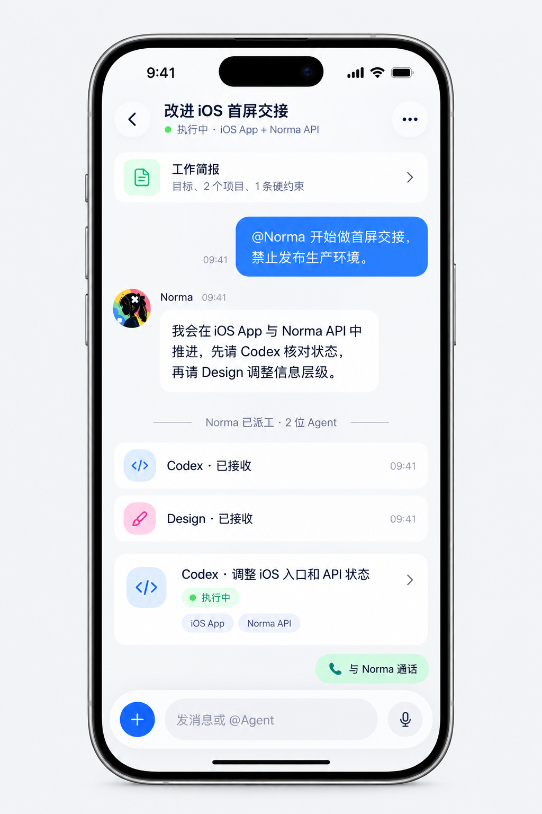
从参考原型提取可复用的界面决定，让每个页面回答：我在哪里、正在发生什么、接下来能做什么。
首屏先呈现事项、状态与下一步；Norma 角色只在通话和引导中成为主视觉。
蓝色负责操作，薄荷提示积极状态，粉色提示待处理，黄色提示限制。
对话、任务和证据保持稳定对比；玻璃留给导航、底栏、输入与 Sheet。
同屏最强操作只有一个，其余操作清楚、可达、不会和危险行为混淆。
返回保留上下文，Sheet 跟手；任务、终端输入权与验收结果始终可见。
以下色值是原型观感的实现起点，并非从生成图中精确取样。落实到原生 App 后仍需在真机与对比度检查中校准。
原生系统字体负责中英文与 Dynamic Type；命令和终端使用系统等宽字体。数值是默认字号下的视觉目标，不是固定字号上限。
34 pt · bold26–28 pt18–20 pt16–17 pt14–15 pt标题醒目，
内容从容。
大字号下让卡片自然增高、标签换行。不能用淡灰承载错误、限制、证据或唯一的操作提示。
示意组件展示结构与状态。真实 iOS 页面由系统导航、输入、键盘和安全区构成，不把这张网页的 CSS 当成 SwiftUI 实现。
让用户从 Mac 切到 iPhone 时，看懂当前任务并继续操作。
iOS AppNorma API有一项操作需要你确认。先阅读原因与建议，再决定下一步。
查看原因与建议 ›导航、底栏、Sheet 与悬浮输入可承载克制的玻璃感；减少透明度时变为清晰实底。
深色只服务真实终端输出；浅色页面外壳仍显示电脑、项目和输入权归属。
● Codex 会话 · Alan Studio
iOS App % git status --short
M HomeView.swift
M TaskStatus.swift
iOS App % ▌点击查看原图。W 系列提供视觉风格和组件状态；现行产品结构请按 P03/P05 与逐屏验收文件处理。
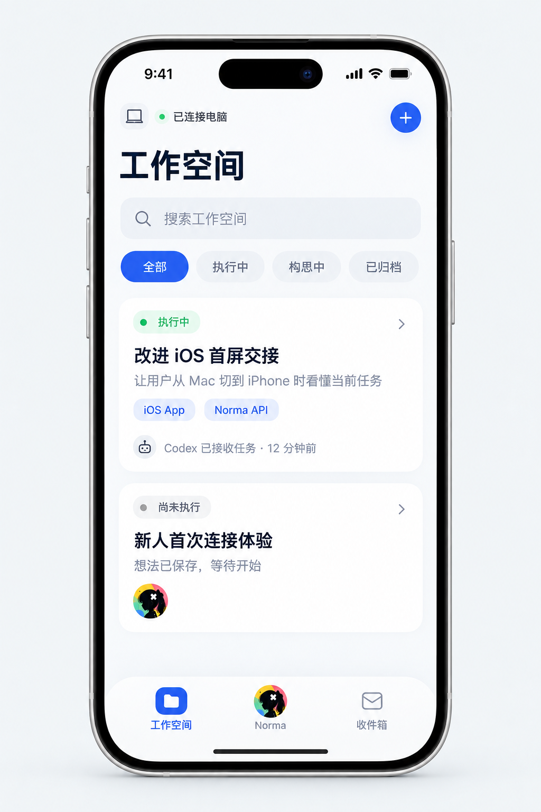
W01 工作空间列表 / 搜索 / 筛选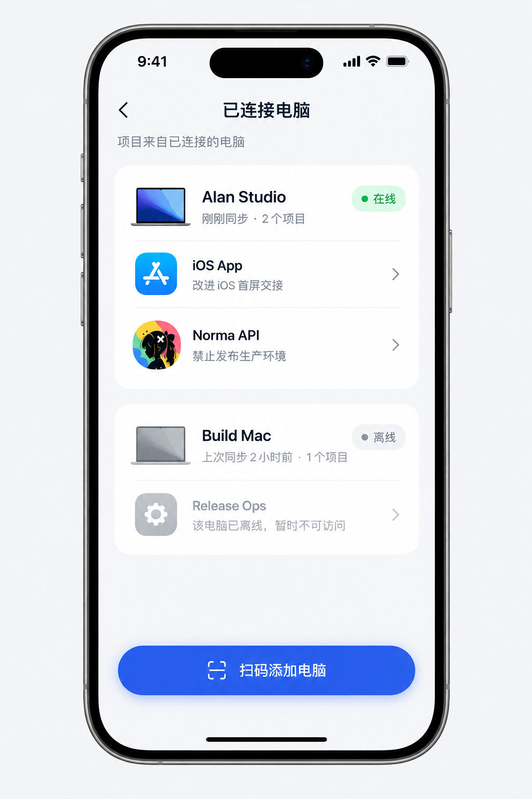
W02 已连接电脑在线 / 离线分组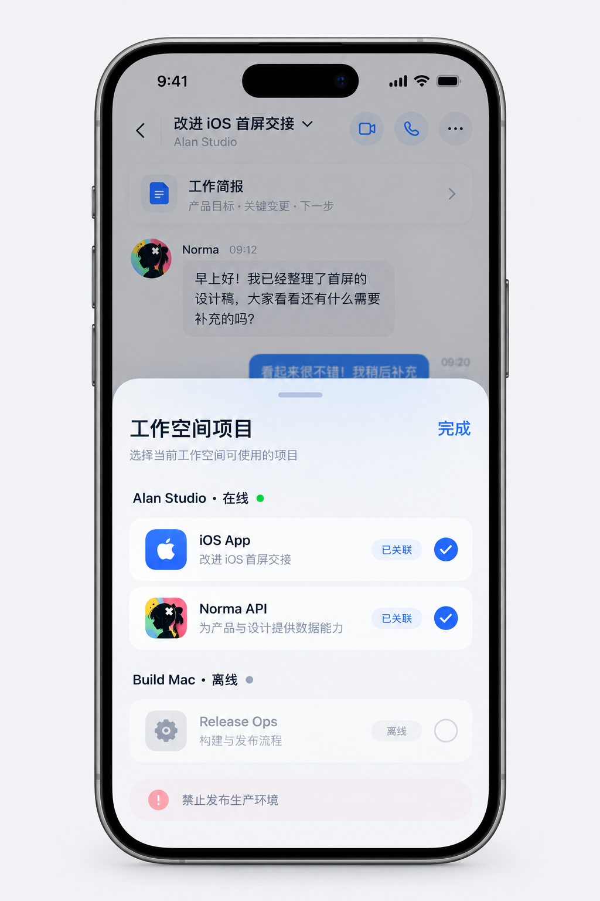
W03 项目 Sheet分组 / 选中 / 禁用 W04 持续对话消息 / 任务 / 输入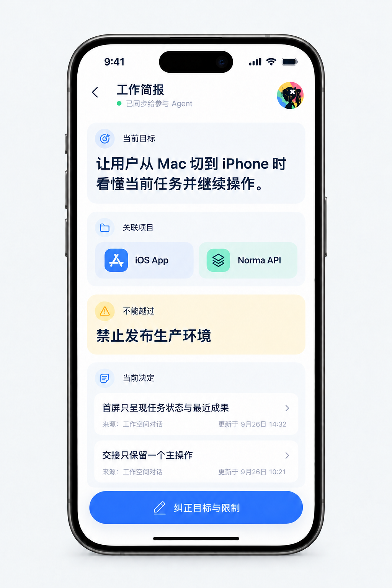
W05 工作简报目标 / 项目 / 决定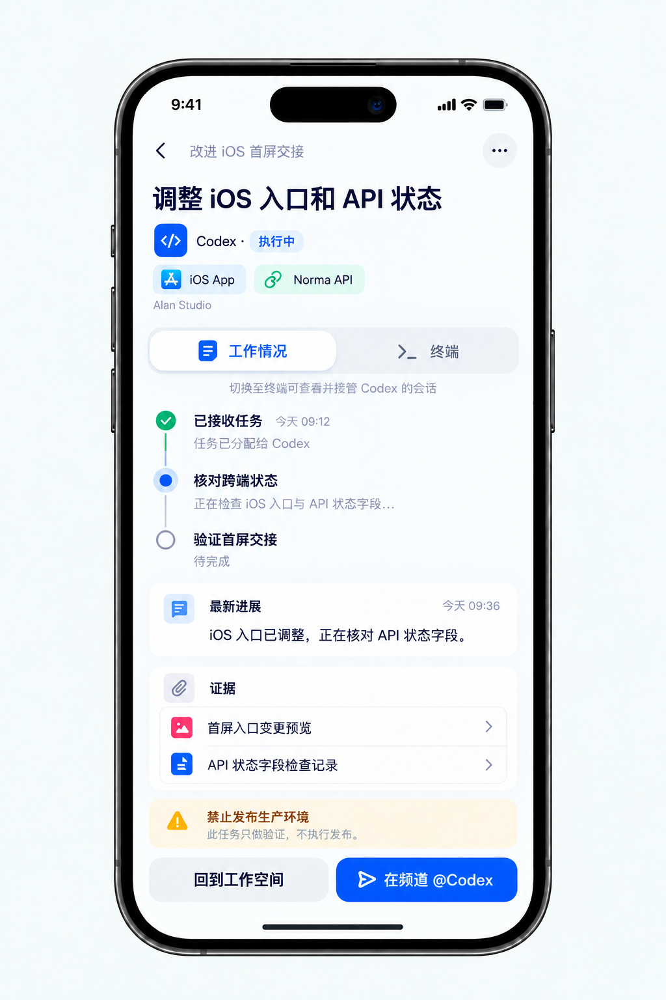
W06 Agent 任务进展 / 证据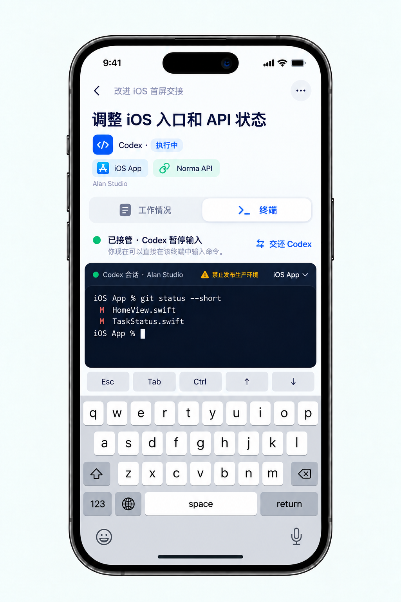
W06a 终端接管同一任务 / 输入权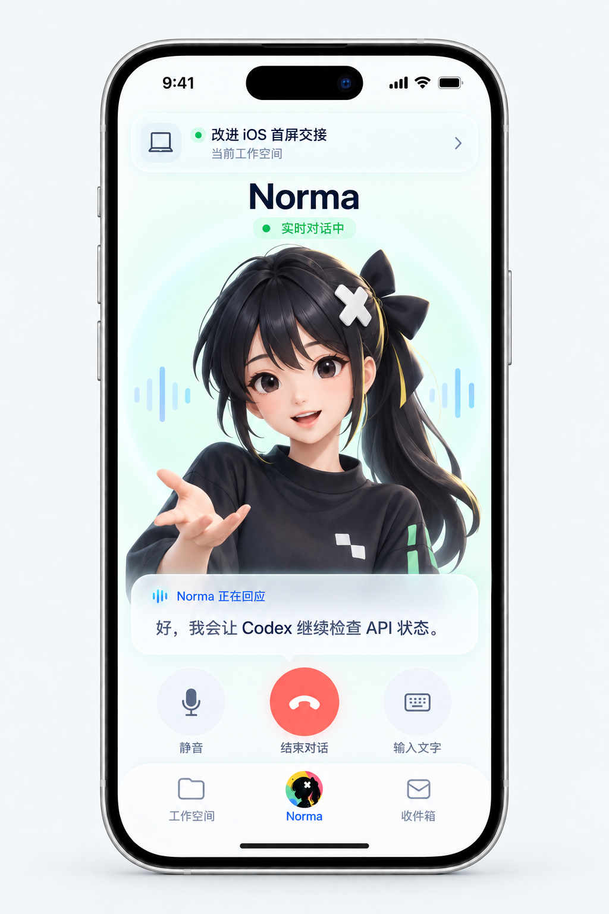
W07 Norma 通话角色布局 / 实时字幕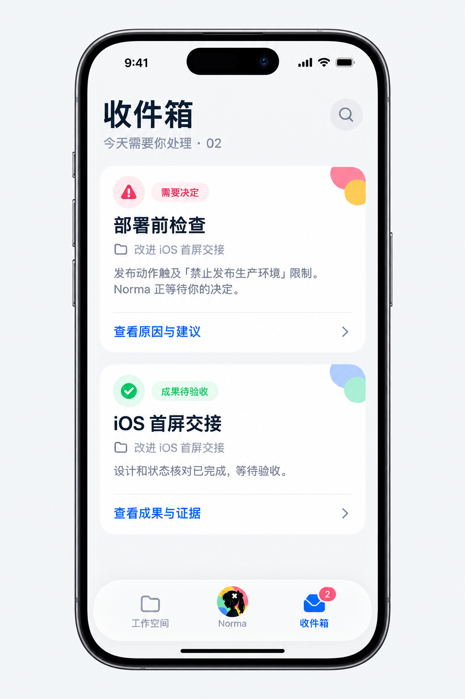
W08 收件箱需要人处理的事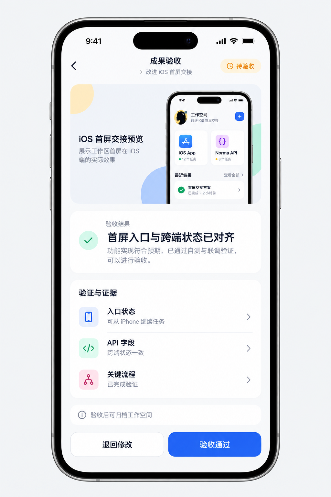
W09 成果验收预览 / 证据 / 双操作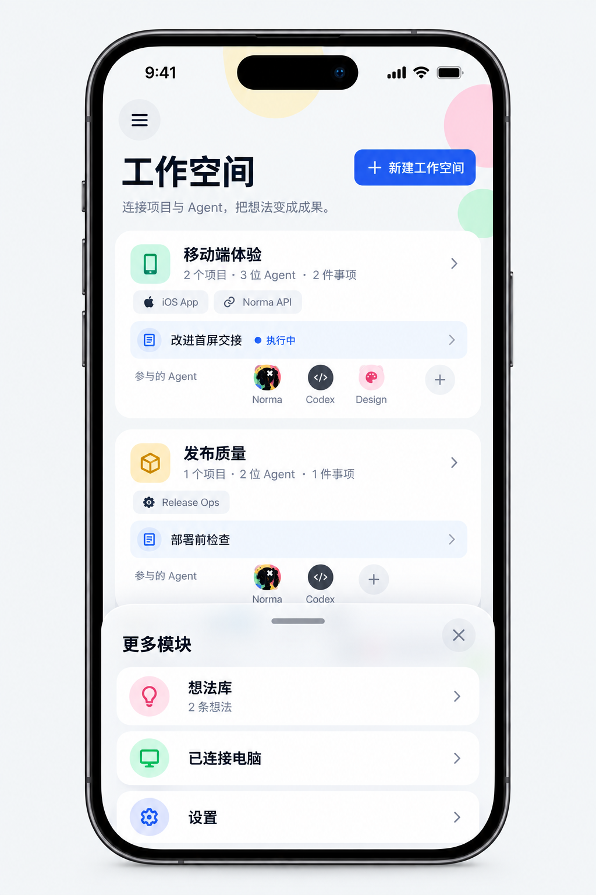
P03 工作空间首页现行主构图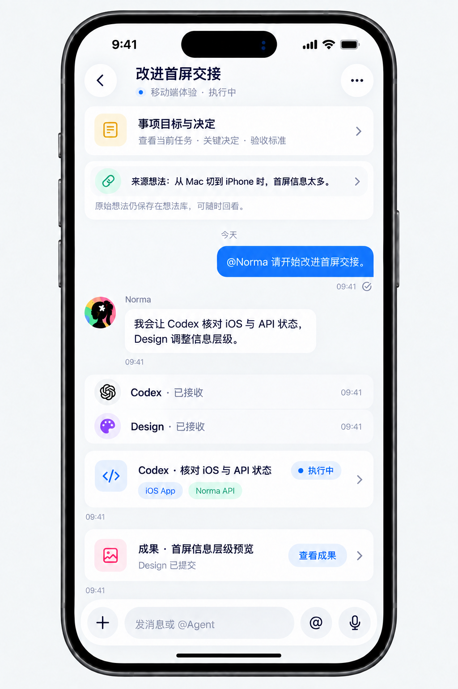
P05 工作线程现行主构图HTML 是视觉速览，完整规则、冲突优先级与真实 App 验收要求以 Markdown 规范和逐屏验收文件为准。